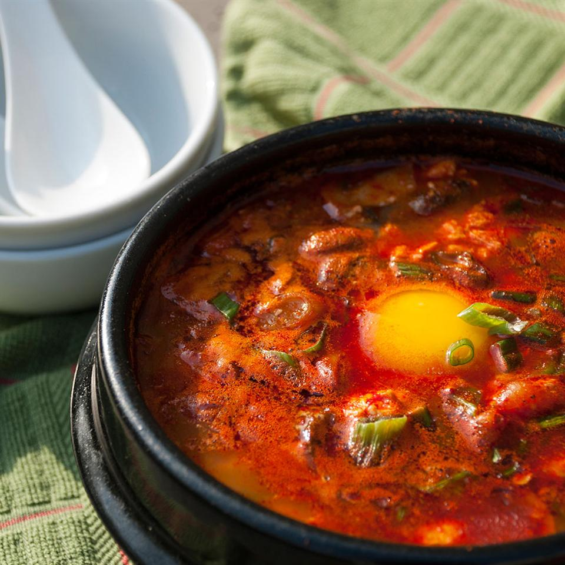

Korean Soft Tofu Stew (Soon Du Bu Jigae)

Description
This is an easy and authentic version of Korean tofu stew. I used to eat this every day at a very popular restaurant. I befriended a woman who worked there and she gave me the recipe. It's very versatile. Small pieces of meat or seafood can be added. It's thick and great in the winter and can be made very mild or very spicy. I've seen some recipes on the internet for this dish that are the American version. They may be good too but this one is authentic.
Ingredients
- Leek, diced
- Onion, diced
- 1 tbsp vegetable oil
- 200 g Ground meat (your preference)
- 2 tbsp red pepper flakes
- 1 cup chicken broth
- 1 cup water
- kimchi
- 2 tbsp sesame oil
- 1 tsp soy sauce
- 200 g soft tofu
- 1 egg (optional)
Steps
- In pot, fry ground meat in vegetable oil
- When meat is mostly cooked, add diced leek and onion
- Add chicken broth and water
- Bring to boil and add kimchi
- Bring to boil again and red pepper flakes, sesame oil and soy sauce to desired taste
- Add soft tofu and bring to boil again
- When boiling add egg and let sit for 1 minute
- Ready to serve!